구글폼 답변을
게시판에 연결해요.
처음에는 조금 낯설 수 있어요.
아래 순서대로 한 번만 준비하면 됩니다.
- Google Form의 응답이 저장되는 Google Sheet
- 그 시트를 열 수 있는 Google 계정
- 지금 열어둔 Playful Booth 게시판
아직 응답 시트가 없다면 Google Form의 응답 탭에서 초록색 Sheets 아이콘을 눌러 만들어주세요.
먼저, 두 종류의 주소를 구분해요
시트 주소는 답변이 쌓인 표를 여는 주소입니다. 보통 docs.google.com/spreadsheets/…로 시작해요.
게시판에 넣을 연결 주소는 아래 과정을 마친 뒤 Google이 발급해주는 주소입니다. script.google.com/macros/s/…/exec로 시작해요. 시트 주소를 그대로 붙여넣는 방식은 아닙니다.
Apps Script는 Google이 제공하는 작은 연결 프로그램입니다. 본인의 Google 계정에서 실행되며, 선택한 열의 내용을 읽어서 게시판에 전달합니다. 원본 시트에 답변을 쓰거나 수정하지 않습니다.
1. 어떤 정보를 보여줄지 골라요
게시판은 아래 세 가지 정보를 사용합니다. 시트 첫 줄은 열 이름, 둘째 줄부터는 응답이어야 합니다.
| 정보 | 사용하는 곳 | 기본 템플릿 |
|---|---|---|
| 제출 시각 | 새 응답을 구분합니다. | A열 |
| 답변 내용 | 말풍선·종이의 본문에 표시합니다. | B열 |
| 작성자 이름 | 카드 아래에 표시합니다. 빈칸이면 익명으로 나옵니다. | C열 |
기본 열 구성 CSV 내려받기 — 구조를 확인하기 위한 예시입니다. 기존 응답 시트의 열을 억지로 옮길 필요는 없어요.
기존 시트를 열고 맨 위의 A, B, C… 알파벳을 확인해주세요. 실제로 해당 정보가 들어 있는 열 문자를 아래에 입력하세요. 열 제목이나 질문 문장이 아니라 열 문자를 입력합니다.
이 버튼은 입력한 열 문자를 설정값으로 바꿉니다. 실제 시트를 열거나 연결·저장하지 않습니다. 아래 세 줄을 3단계에서 사용합니다. 선택한 세 열만 각각 읽으며, 그 사이에 있는 다른 열은 가져오지 않습니다. 답변이 빈 행은 표시하지 않습니다.
2. 연결 프로그램을 만들어요
- Google Apps Script 새 프로젝트 열기를 누르고 응답 시트를 읽을 수 있는 계정으로 로그인하세요. 기존 프로젝트를 덮어쓰지 않도록 새 프로젝트를 사용합니다.
- 프로젝트 이름은 알아보기 쉽게 정해주세요. 예: 내 행사 게시판 연결.
- 처음 보이는
Code.gs의 내용을 지우고, 아래 Code.gs 코드를 전체 복사해 붙여넣으세요. - 파일 옆 ＋ → HTML을 누르고 이름을
Bridge로 입력합니다..html은 자동으로 붙습니다. - 새 HTML 파일의 내용을 지우고 아래 Bridge.html 코드를 붙여넣은 뒤 저장하세요.
Code.gs 코드 펼치기
Bridge.html 코드 펼치기
화면 예시 보기: Code.gs에 코드 붙여넣기
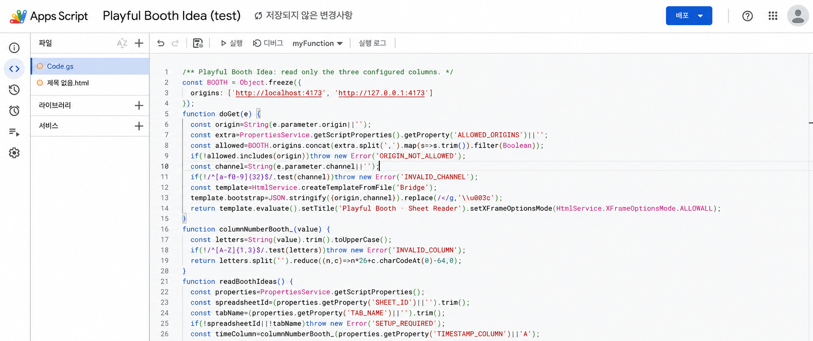
화면 예시 보기: Bridge.html에 HTML 코드 붙여넣기
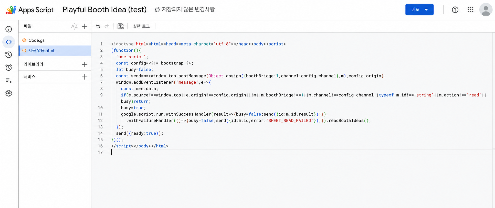
화면은 위치를 찾기 위한 예시입니다. 복사할 코드는 위의 최신 코드 영역을 사용하세요. 개인 정보는 이미지 파일에서 가렸습니다. 이미지를 누르면 확대하고 원본 크기로 볼 수 있어요.
3. 본인 시트 정보를 Google에 설정해요
Apps Script 왼쪽의 톱니바퀴 프로젝트 설정을 누르세요. 스크립트 속성 → 스크립트 속성 추가에서 다음 항목을 한 줄씩 넣고 저장합니다. 이름은 대문자와 밑줄까지 그대로 입력해주세요.
| 속성 이름 | 속성 값에 입력할 내용 |
|---|---|
SHEET_ID | 본인 시트 URL의 /d/ 뒤부터 다음 / 앞까지. 시트 URL 전체가 아닙니다. |
TAB_NAME | 시트 아래쪽에 있는 응답 탭의 이름. 띄어쓰기까지 그대로 적습니다. |
TIMESTAMP_COLUMN | 1단계에서 고른 제출 시각의 열 문자 |
MESSAGE_COLUMN | 1단계에서 고른 답변 내용의 열 문자 |
AUTHOR_COLUMN | 1단계에서 고른 작성자 이름의 열 문자 |
ALLOWED_ORIGINS | 게시판 주소의 https://도메인 부분만 입력. 뒤의 경로·끝 슬래시는 빼주세요. 여러 주소는 쉼표로 구분합니다. |
로컬 QA 주소인 http://localhost:4173은 기본 허용됩니다. 배포한 게시판을 연결할 때에는 그 게시판의 출처를 설정하세요. 이 설정은 연결을 제한하는 장치이며 사용자 로그인 인증은 아닙니다.
본인의 시트 ID와 탭 이름은 Google의 스크립트 속성에만 입력합니다. 공개 소스 파일이나 README에 적지 마세요. 이 앱에는 다른 사람의 시트가 기본 연결되어 있지 않습니다.
화면 예시 보기: 스크립트 속성 입력과 저장
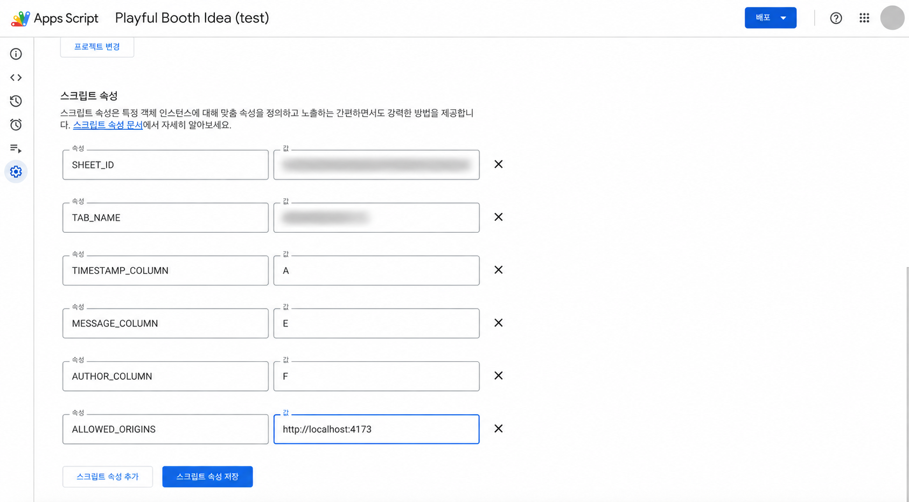
GitHub Pages에 올릴 때 입력할 주소
게시판 주소가 https://your-name.github.io/event-board/라면 ALLOWED_ORIGINS에는 https://your-name.github.io만 입력합니다. /event-board/와 마지막 슬래시는 제외합니다. 맞춤 도메인을 쓰면 그 도메인의 https:// 주소를 넣으세요. Google Sheets 주소나 Apps Script 주소를 넣는 칸이 아닙니다.
GitHub Pages는 HTML·CSS·JavaScript를 제공하는 정적 호스팅입니다. 브라우저에 전달되는 코드와 연결 주소는 방문자가 확인할 수 있으므로 비밀번호·토큰을 넣지 않습니다. 시트는 Google의 스크립트 속성으로 지정하고 원본 시트의 공유 권한은 별도로 관리합니다.
이 코드의 ALLOWED_ORIGINS는 게시판 출처와 창 사이 메시지를 확인하는 설정입니다. 출처에는 경로가 포함되지 않아 같은 your-name.github.io 아래 다른 프로젝트도 같은 출처입니다. 이 값은 비밀값이나 사용자 인증 수단이 아니며, 현재 연결 코드에는 방문자 로그인·서버 측 사용자 권한 확인이 없습니다. ‘나 / 모든 사용자’로 배포하면 방문자가 시트 권한 없이도 선택한 답변과 작성자 값을 조회할 수 있습니다.
공식 안내: GitHub Pages · Apps Script 웹 앱의 실행 권한 · 출처의 구성
4. 시트를 읽을 수 있는지 확인해요
- 왼쪽 편집기로 돌아갑니다.
- 상단의 함수 선택 목록에서
readBoothIdeas를 고르고 실행을 누릅니다.doGet을 직접 실행하는 단계가 아닙니다. - Google이 권한을 요청하면 계정·본인이 만든 프로젝트·요청 범위를 확인합니다. 내용을 이해하고 동의하는 경우에만 승인하세요. ‘Google에서 확인하지 않은 앱’이 나오면 개발자가 본인인지 확인하고, ‘고급’을 펼쳐 추가 안내를 읽습니다. 본인이 만든 코드를 신뢰하고 요청 권한에 동의할 때만 프로젝트 이동 링크로 진행한 뒤 ‘계속’을 누릅니다. 관리자에 의해 차단된 경우에는 우회하지 말고 관리자에게 확인하세요.
- 실행이 완료되면 다음 단계로 넘어갑니다. 오류가 나오면 아래 도움말을 확인해주세요.
화면 예시 보기: readBoothIdeas 함수 선택
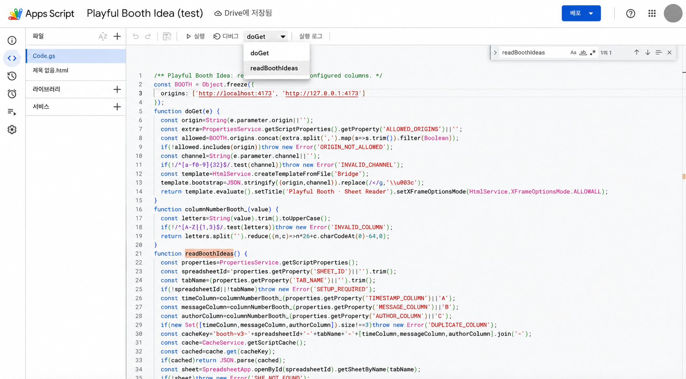
화면 예시 보기: 처음 실행할 때 권한 검토
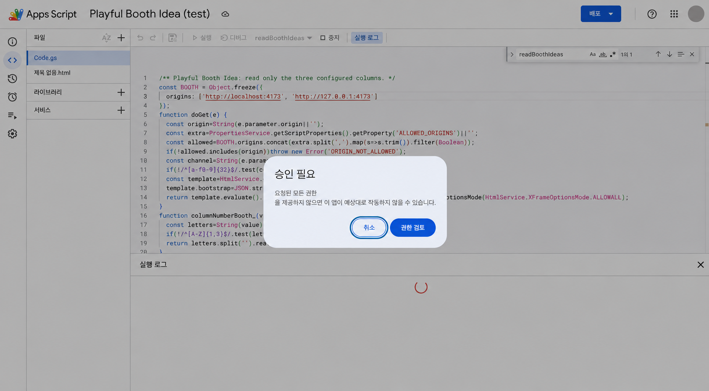
화면 예시 보기: Google에서 확인하지 않은 앱 안내
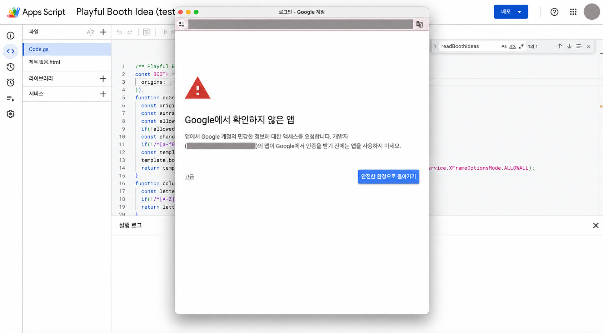
화면 예시 보기: 고급 안내 펼치기
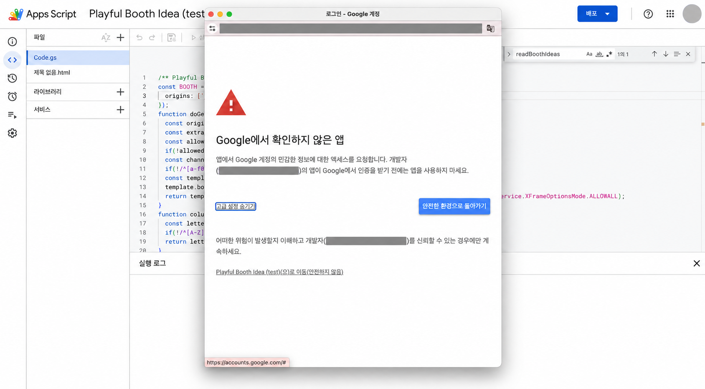
화면 예시 보기: Google 계정과 요청 권한 확인
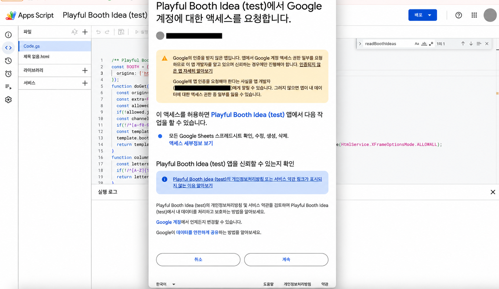
5. 연결 주소를 발급받아요
- 오른쪽 위 배포 → 새 배포를 누릅니다.
- 유형 선택에서 웹 앱을 고릅니다.
- 실행 주체는 나, 액세스 권한은 모든 사용자로 지정하고 배포합니다.
- 발급된 웹 앱 URL을 복사합니다. 주소 끝이
/exec인지 확인하세요.
이 읽기 주소를 통해 선택한 답변과 작성자 이름을 조회할 수 있습니다. 공개해도 되는 항목만 골라주세요. 원본 시트를 웹에 게시할 필요는 없습니다. 회사 계정에서 ‘모든 사용자’ 배포가 허용되지 않으면 관리자에게 확인해야 합니다.
화면 예시 보기: 배포 메뉴에서 새 배포 선택
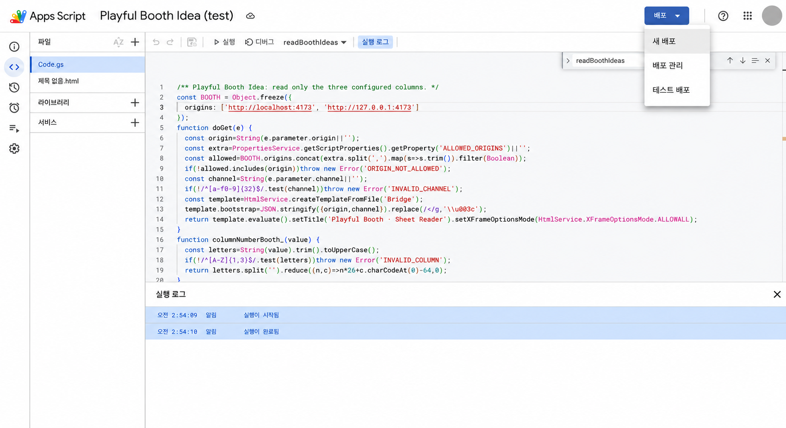
화면 예시 보기: 웹 앱 유형과 실행·접근 권한 설정
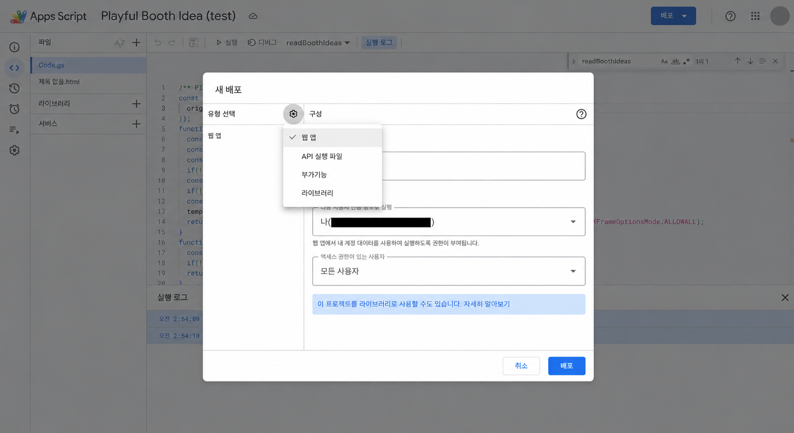
화면 예시 보기: 배포 완료 후 웹 앱 URL 복사
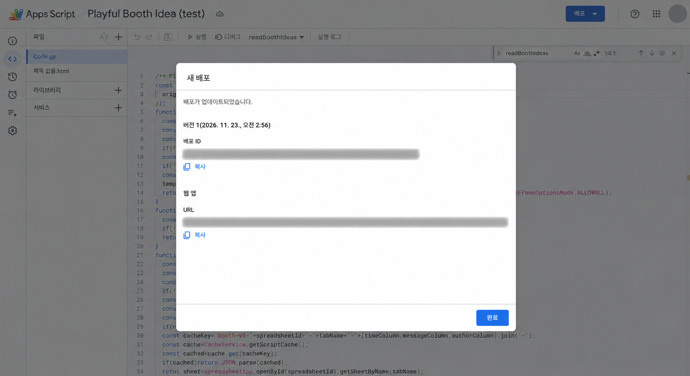
6. 게시판에 붙여넣고 테스트해요
- 게시판 첫 화면으로 돌아가 보드 만들기를 누릅니다.
- 행사명과 게시판에 띄울 질문을 입력하고, 원하는 화면과 손을 고릅니다.
- Apps Script 웹 앱 주소에 방금 복사한
/exec주소를 넣고 게시판 열기를 누릅니다. 실제 연결 확인에는 ‘샘플로 미리보기’를 선택하지 않습니다. - 구글폼으로 구분하기 쉬운 테스트 답변을 하나 제출하세요. 원본 시트에 추가되었는지, 다음 한두 번 갱신 안에 게시판에 도착하는지 확인합니다.
- 상단 버튼으로 우주형과 카드형을 바꿔보세요. 연결과 답변은 유지됩니다. 새 응답은 현재 화면에 맞춰 등장합니다.
응답은 기본 7초 간격으로 확인하고, 읽기 결과를 5초 동안 캐시합니다. 시트 연결에 실패하면 마지막 정상 기록을 유지하며 재시도합니다. 접수 시간 제한은 없습니다.
잘 안 될 때 확인해주세요
| 상황 | 확인할 것 |
|---|---|
SETUP_REQUIRED | SHEET_ID와 TAB_NAME을 스크립트 속성에 저장했는지 확인합니다. |
TAB_NOT_FOUND | 탭 이름이 실제 시트와 같은지 확인합니다. 파일 제목이 아니라 아래쪽 탭 이름입니다. |
INVALID_COLUMN | 열 설정에는 A, B, AA 같은 영문자만 입력합니다. |
DUPLICATE_COLUMN | 제출 시각·답변·작성자는 서로 다른 열을 지정해야 합니다. |
| 연결 재시도 중 | /exec 주소, 모든 사용자 액세스, ALLOWED_ORIGINS의 게시판 출처를 확인합니다. |
| 연결되지만 답변이 없어요 | 답변 열이 맞는지 확인합니다. 해당 열이 빈 응답은 표시하지 않습니다. |
| 코드를 수정했는데 그대로예요 | 배포 관리에서 웹 앱을 새 버전으로 업데이트한 후 다시 연결합니다. |